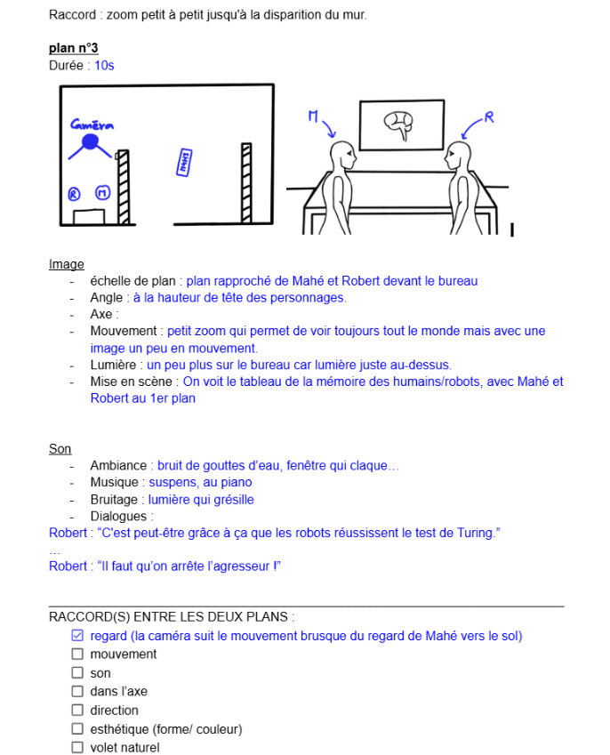
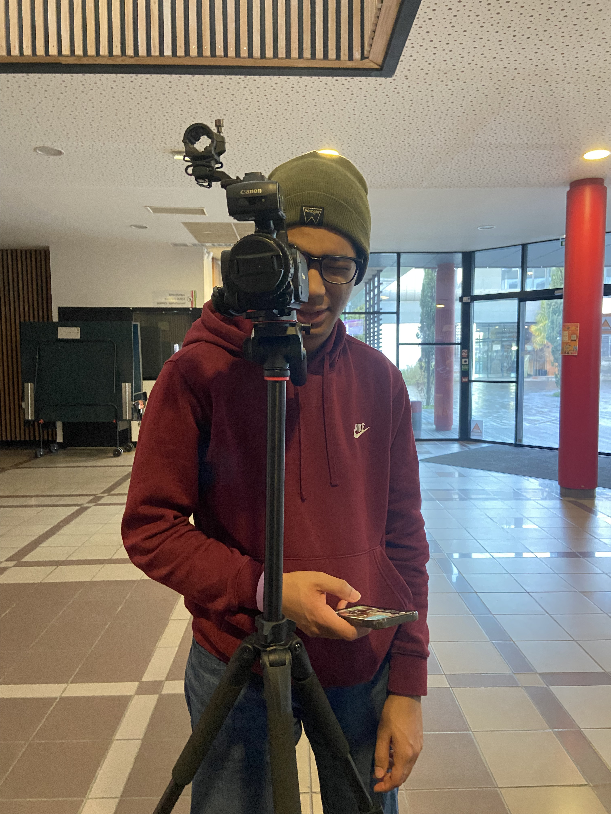
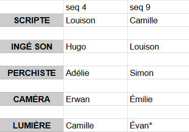
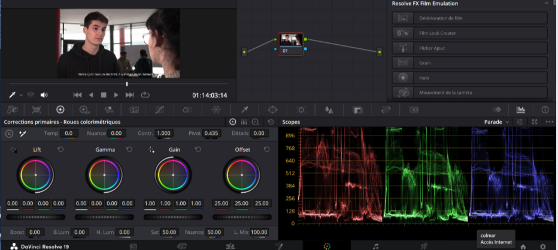

Ce projet s'est organisé en plusieurs grandes parties sur toute l'année :
La première étape de la création d'un film est l'écriture d'un scénario. Notre groupe se retrouvait à tous les crénaux alloués au projet de septembre pour trouver une première idée de script. Nous avons discuté avec notre client sur les idées que nous avions, ce qui nous a amené à chosir la prémisse suivante :
Milieu octobre, nous avons écrit une première version d'un scénario séquencé, c'est-à-dire séparé en différentes séquences liées par une unité de temps, de lieu ou d'action. Contrairement à la prémisse, nous nous sommes séparés en petits groupes de 2 pour rédiger chaque séquence. Ce séquençage est passé à travers 3 différentes versions qui ont été revues par notre tuteur et l'équipe pédagogique. Leurs retours ont été pris en compte afin de valider le scénario. Lire le scénario complet (PDF)
Le travail sur cette étape s’est poursuivi jusqu’en janvier, aboutissant à un découpage technique complet.
Les éléments décrits dans chaque plan sont :

Exemple de découpage technique : plan n°3 de la séquence 8
Nos dates de tournage ayant été fixées en février, nous avons mis à profit le mois de janvier pour organiser tous les aspects logistiques. Pour cela, nous nous sommes répartis en équipes de 2 à 3 personnes, chacune en charge d’un pôle spécifique.
Jeanne et Adélie ont sélectionné les lieux de tournage les plus adaptés aux scènes du film. Elles ont aussi conçu ou récupéré des accessoires pour enrichir les décors et renforcer l’univers visuel.
Evan et Simon ont été chargés de recruter des acteurs incarnant au mieux les personnages du scénario. Bien que certains rôles aient été confiés à des étudiants de l’ENSC, d’autres ont nécessité la participation de comédiens extérieurs pour un rendu plus professionnel.
Louison et Camille ont conçu les costumes de chaque personnage, avec une attention particulière pour les humanoïdes nécessitant un maquillage spécifique récurrent à chaque scène.
Erwan, Émilie et Hugo ont organisé les plannings de tournage, réservé les lieux et géré la logistique : disponibilité des acteurs, matériel, repas et coordination des transports.
Le tournage devait se dérouler sur 3 jours et demi répartis sur 5 jours différents, entre le 15 et le 26 février.
Durant le tournage, nous nous sommes répartis les rôles nécessaires pour chaque scène :
Un ordre de passage initial était prévu pour que chacun teste tous les postes, mais parfois, certains rôles comme perchiste et ingénieur.e son étaient effectués par une seule personne. Nous avons ainsi expérimenté tous les rôles, parfois en étant moins présents sur le plan technique.
En parallèle, certaines personnes préparaient la restauration des acteurs et figurants lors des journées de tournage.


Le montage a été réalisé avec le logiciel DaVinci Resolve, dans sa version gratuite. Fidèles à notre logique de continuité, les réalisateurs de chaque séquence se sont chargés de monter une première version de leurs scènes respectives.
Ensuite, Adélie et Erwan ont pris le relais pour assembler l’ensemble du film, tandis que Simon composait la musique originale.
Le reste de l’équipe participait en réalisant des retours constructifs, en organisant les diffusions à l’administration et aux élèves, et en préparant les rendus finaux du projet.

Exemple de séquence montée dans DaVinci Resolve